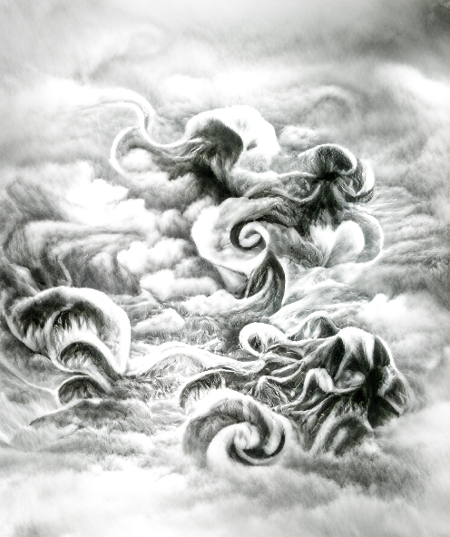
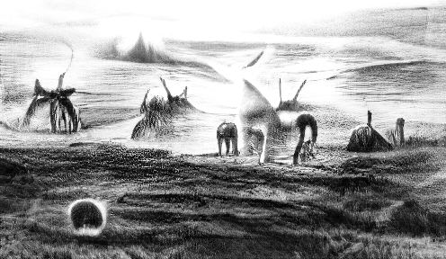

‘A Descriptive Compendium of Things Fleeting and Remote, intended for the Guidance of Cautious Travellers’ by Elver Wadril. Printed for the author in the Year of Floating Sheep.
Coveted by collectors, this bafflingly instructive work has been subject to controversy for more than three centuries. Complete sets are very rare, and those few that are known to be in private libraries have been unscrupulously stripped of most of their enigmatic engravings.
The following extracts have been generously provided by a devoted scholar, whose anonymity we have agreed to respect.
\1. [Vol.1, p.114]
WHEREIN IS MADE CLEAR THE UTILITY OF THE HEAD-HOOD
Having already dealt with the importance of assessing the difficulty of terrain and being alert to vagaries of weather I do not presume to offer advice on a traveller’s choice of clothing, except in one vital respect, namely, protection of the head, that mere cage of bone clad in vulnerable flesh, subject to Nature’s rough whims, and who knows what malign perils lurking unseen behind this innocent boulder, that stately tree, yonder shadowed ridge?
Consider: the head is our observation tower, our listening-post, a discriminator of odours, a portal of breath. It is our house of memory, reflection, dreams and decisions, our chamber of song, our fabricator of speech and the theatre of our emotions. Surely it is deserving of a staunch guard against adversity. To this purpose I humbly commend a bespoke hood of seasoned ox-hide; a twofold layer, padded with coir, or if it may be obtained, the bog-moss celebrated for its prodigious absorbency of moisture. At those points where openings are necessary, pieces of metal mesh, such as the fine sieves used in kitchens, may be sewn in place. If desired, to assist ventilation, additional breathing-pipes can be fashioned from short lengths of bamboo, taking care to cushion their inner ends to prevent scratching of the skin.
The lower portion of the hood may be fitted with a draw-string. If there is a sufficient quantity of hide the excess could be trimmed to rest across the shoulders, in either instance shielding the entire head and neck from vicious attack by insect, bird, or any other beast with the ability to propel itself headward from a place of concealment.
\2. [Vol.4, p.17]
SOME CHARACTERISTICS OF THE PLAINS OF GRINTZ
To the south of the Fehennus lies the flat, arid region of Grintz, subject to prolonged heat for much of the year, and inhospitable to all but a few robust creatures, notably snakes and other reptiles. They lie seemingly insensible in the shelter of rocks during the day, yet are capable of alarmingly swift movement in search of prey as soon as light drains from the sky. Vegetation is sparse and may be extremely hazardous. One example is the catch-bush. In daytime its thin, wiry branches have the same rust-colour as the soil, making it difficult to see. At the lightest touch the tightly-coiled poisonous barbs will dart out and clutch like a swarm of deadly claws.
\3. [Vol.6, p.241]
TO THOSE CONSIDERING A SEA-CROSSING FROM TORF TO HOQUATIL
If you value your lives, rid yourselves of such foolish intent. The sea is ceaselessly rapacious, and the storm-clouds have been seen to project questing tentacles.

\4. [Vol.6, p.255]
TRAVERSING THE RUALBUR HILLS
Were they padded or hooved, the innumerable feet that stamped out the narrow trackways of the Rualbur Hills? We know only that their habitual tread must have persisted for generation upon generation until the last of those now vanished beasts perished, or were driven elsewhere by some unrecorded exigency. Today the hill-sides are rife with head-high clumps of broel, commonly called fogweed, whose ground-hugging vapours seduce the eye into seeing paths where none exist, inviting reckless ventures over uncertain ground, leading nowhere.
\5. [Vol.9, p.71]
CONCERNING DARKNESS IN THE TROVAGE OF HEMB
As we have previously observed, many hazards manifest themselves only after the setting of the sun. Here, in the Trovage of Hemb, after dusk, when the moon is new or cuspate, there arise vast wavering pools of shadow which flow across the land in every direction too swiftly for the eye to follow. It is all too likely that they feed upon any creature hapless enough to be far from the safety of its lair. By dawn these gliding shades will have seeped back into the nether depths, whereupon travellers may then explore the Trovage without fear.
\6. [Vol.10, p.38]
FOR THE EDIFICATION OF TOWN-DWELLERS AND THOSE SIMILARLY DISADVANTAGED
It may seem specious to suggest that those who dwell in towns suffer in their daily lives the same impediment as that of forest folk, or of the pastoral inhabitants of some secluded valley. Yet it is so. I speak of obstructed vision; in particular, of an inability to see from the ground that distant line where earth meets sky, because of intervening obstacles such as buildings, trees or mountains.
There may be some, whether by choice solitary or perforce outcast, who live at a town’s boundary, or a forest’s fringe, and consequently who may achieve an unimpeded view in at least one direction. Valley-dwellers have no option but to climb, or to resort to lifting-balloons.
The significance of that far-off juncture at the very edge of the world becomes clear when one confronts the question most anxiously asked by any traveller, namely “What is that on the horizon?” The answers are astoundingly various, and sometimes simply astounding. Historical reports tell of wraiths, chimæras, hippogriffs and other apparitions of a mythical nature. While we may dismiss such notions as the fearful products of a less enlightened age, we should not close our minds to the existence of things beyond our present knowledge, evidence of which is presented in these pages.

The ancients believed that the conjunction of sky and earth generates the seeds of creation. Where would this process be more richly illuminated than at the world’s rim come the hours of sunrise and sunset? Travellers in open spaces are therefore
advised to address their attention to the horizon at these significant times, and to take note of what may emerge from the perfusion of light. Watchers should be sure to equip themselves with a piece of dark glass in order to reduce the sun’s glare.
Many will know of Arvol Spile as the designer of an ingenious device for numbering stones. He is also an assiduous dawn-watcher, having made repeated observations from the excellent vantage of Tussel’s Peak. Spile notes that it is not uncommon to see “a bristling, close-packed phalanx of diminutive figures” at the very limit of view. Others have described very similar phenomena, some claiming to have heard faint swellings of sound emanating from the same source; a distant clamour, as of a multitude of voices raised in anger or protest.
Whether these occurrences are in any way ominous has not yet been determined.